Feed Reranking Module
This module implements Multifactor Sequential Reranking with Perception-Aware Diversification (MPAD) — a hybrid recommendation engine that combines interest modeling, recency/popularity/exploration reranking, and MMR-based diversification.
Note
This implementation makes specific simplifications and modifications to the original approach proposed in MPAD: Multi-factor Sequential Re-ranking with Perception-Aware Diversification. In particular, we omit the bi-sequential DPP and the perception-aware similarity kernel described in the original model, favoring a more lightweight and interpretable pipeline.
Table of Contents
- Overview
- Key Differences from the Original Paper
- Stage 1: Interest Vector Computation
- Stage 2: Hook Scoring
- Stage 3: Diversification via MMR
- Feed Generation Pipeline
- Constants
Overview
The system has three major stages:
- User Interest Vector Construction
- Hook Scoring with Popularity, Recency, and Exploration Adjustments
- Diversified Feed Generation via Maximal Marginal Relevance (MMR)
Key Differences from the Original Paper
This implementation intentionally deviates from the original MPAD model for performance and simplicity:
Collapsible callout
Bi-Sequential Determinantal Point Process (DPP):
Removed in favor of a simpler MMR-based reranking for diversity, improving runtime efficiency and easing tuning.
Collapsible callout
Perception-Aware Kernel for Similarity:
Replaced with a Jaccard similarity on hook tags, allowing interpretable and tag-based diversity computation without complex embedding comparisons.
These changes maintain the core idea of balancing personalization with diversity and exploration, while enabling easier deployment and scaling.
Stage 1: Interest Vector Computation
compute_interest_score(hook, interaction)
Formula:
- : weight for action (click, like, etc.) from
INTERACTION_WEIGHTS - : interaction duration
- : weight for duration (from
INTERACTION_WEIGHTS['duration']) - : decay rate constant (
DECAY_LAMBDA) - : days since hook creation
score = INTERACTION_WEIGHTS[action] + duration * INTERACTION_WEIGHTS["duration"]
score *= math.exp(-DECAY_LAMBDA * days_ago)
Decay Rationale:
Older content becomes less relevant over time using an exponential decay.
enrich_with_explicit_tags(interest_vector, explicit_tags, implicit_tags)
- Boosts interest in explicitly and implicitly tagged categories.
- Boost values:
- Explicit tag:
+5.0 - Implicit tag:
+2.5(half)
Stage 2: Hook Scoring
compute_reranked_score(hook, base_score, max_views)
Formula:
Where:
- Base score = dot product of interest vector and hook tags
- Recency =
- Popularity = normalized view count
- Exploration = random factor in [0.01, 0.1]
- Weights from the WEIGHTS dictionary
score = (
WEIGHTS["base_score"] * base_score +
WEIGHTS["recency"] * recency_score +
WEIGHTS["popularity"] * popularity_score +
WEIGHTS["exploration_bonus"] * exploration_bonus
)
Purpose:
Balances personal relevance with:
- Recency
- Popularity
- Exploration encouragement
Stage 3: Diversification via MMR
apply_mmr(scored_hooks, N, lambda_param)
MMR Formula:
- : already selected hooks
- Similarity = Jaccard Similarity on tags:
mmr_score = lambda_param * rel_score - (1 - lambda_param) * max_sim
def jaccard(tags1, tags2):
set1, set2 = set(tags1), set(tags2)
return len(set1 & set2) / len(set1 | set2)
Diversification Tradeoff:
- : pure relevance
- : pure diversity
-  : hybrid
Feed Generation Pipeline
update_profile()
- Iterates all users and logs
- Computes updated interest vectors
- Stores them in the
profile_collection
get_candidate_hooks(user_interest_vector, N, lambda_param)
- Collects all hooks
- Reranks each with
compute_reranked_score - Sorts and selects top-K candidates (based on
CANDIDATE_POOL_FACTOR) - Applies MMR to get final top-N diversified results
generate_mpad_feed(user_id, N)
- Loads user profile
- Computes feed using reranking and MMR
- Returns list of hook documents
Constants
These are defined in src.constants: